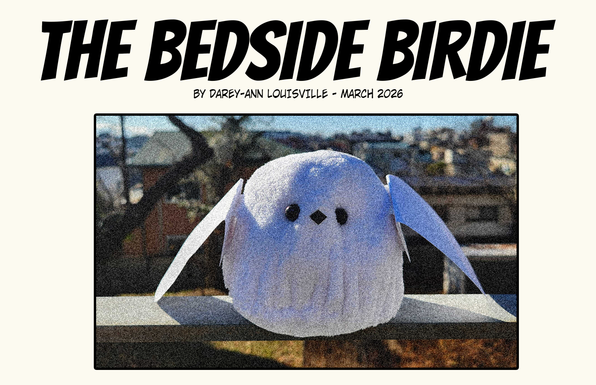
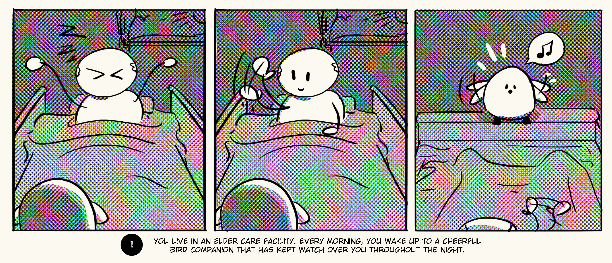
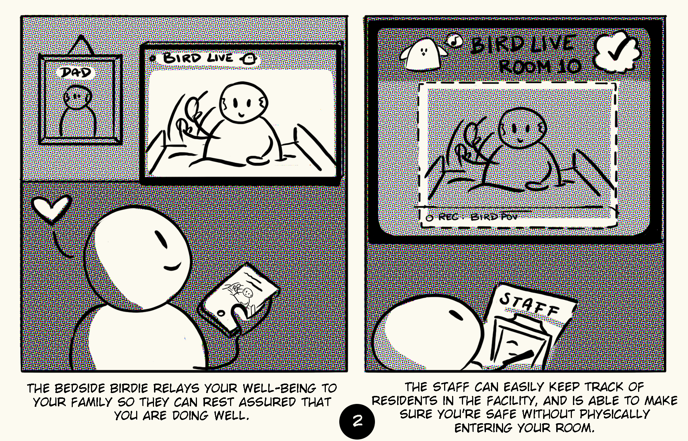
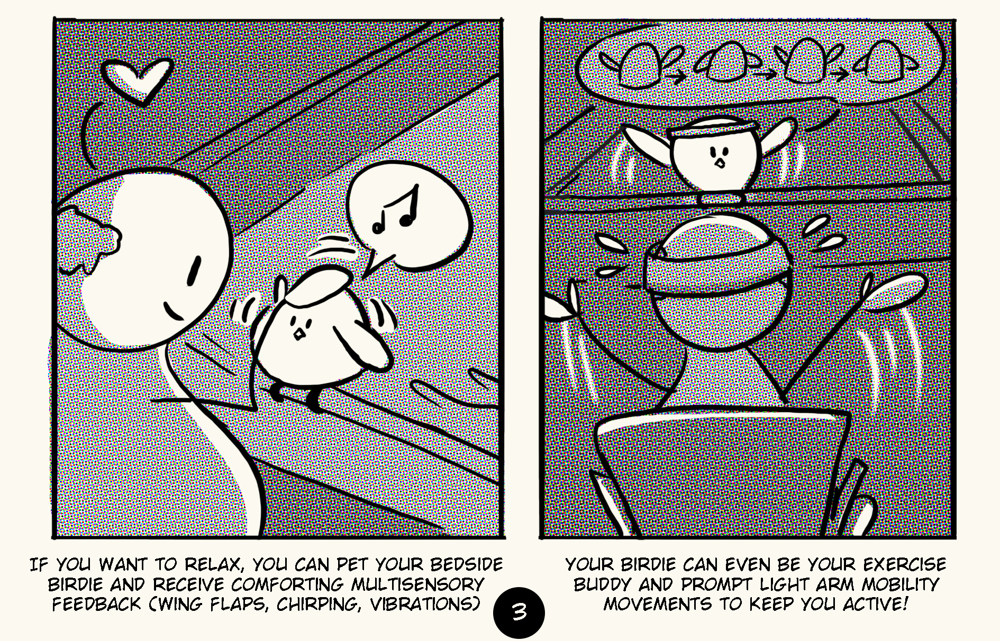
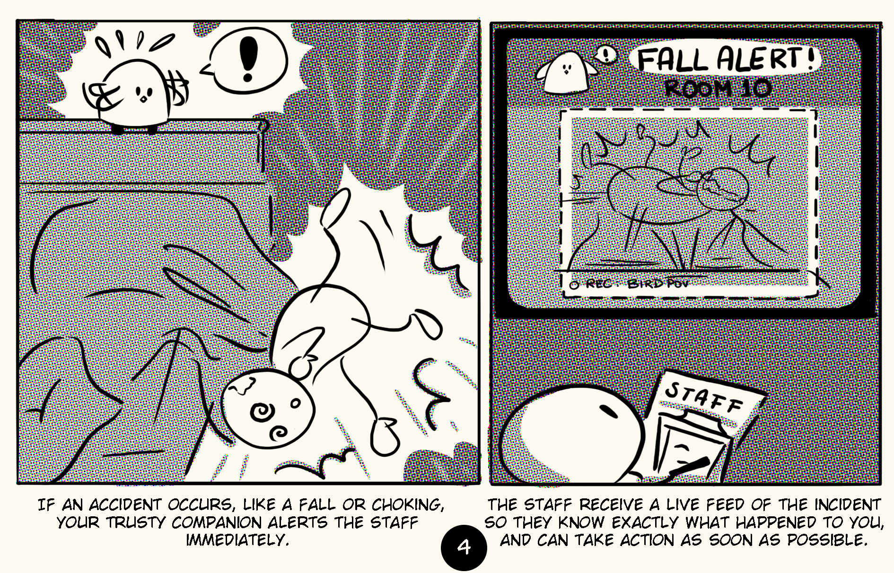
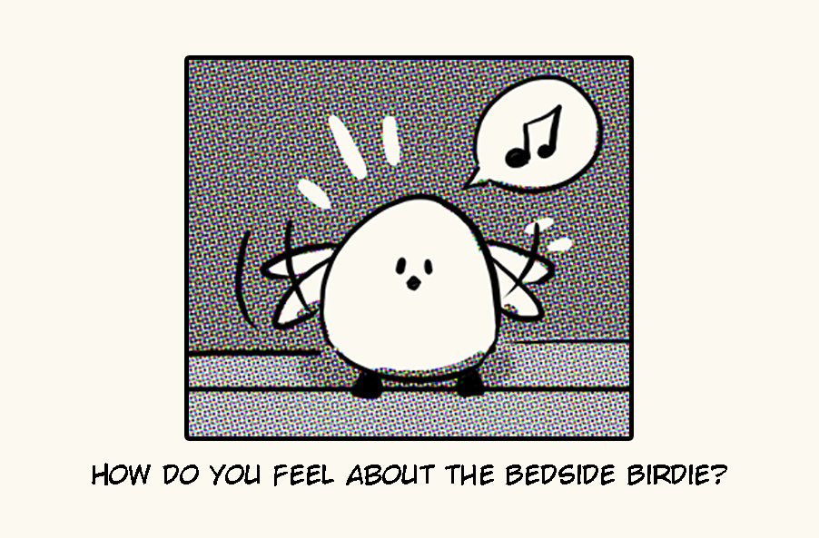

Master's Thesis Project
Title: Design Exploration of Camera Monitoring to Foster Trust in Elderly Care Facilities
This research investigated how the design of camera monitoring systems can be redesigned to foster trust and emotional support for residents in care facilities. The study explored whether users can be shifted along an "acceptance spectrum," from passive tolerance to active preference and trust. Drawing on the Baby Schema (Kindchenschema) and the Technology Acceptance Model (TAM), the study examined how the perceived usefulness, user control, and camera form influence acceptance. Using a Research through Design methodology with a mixed-methods, participatory approach, the project progressed through four iterative phases: literature review, user engagement, prototyping, and analysis. Data collection included a perception workshop, a custom "Friendshapes" application to study visual attributes associated with safety and trust, and in-person interviews with residents and staff at elder care facilities by San Ikukai and AS Partners. The design process produced three interaction categories: nurture, reflect, and connect, with two low fidelity prototypes. The first is a plush companion evoking nurturing responses alongside employing its surveillance functions, and the second is an assistant bot, which offers personal health insights to support user agency. Findings show that acceptance depends on a "privacy-for-benefit trade-off," with greater openness when monitoring provides direct value. Ultimately, this research argues that the discomfort of surveillance is a design challenge rather than solely an inherent technological limitation. By rethinking the physical form and the interactive relationship between the device and the resident, surveillance can be transformed into an ethically aware, supportive service. This study contributes a design framework and a set of principles to guide the development of future monitoring technologies that prioritize human dignity and long-term well-being.
Keywords: Well-being Engineering, Elder care, Camera monitoring, Research through Design, Agetech





